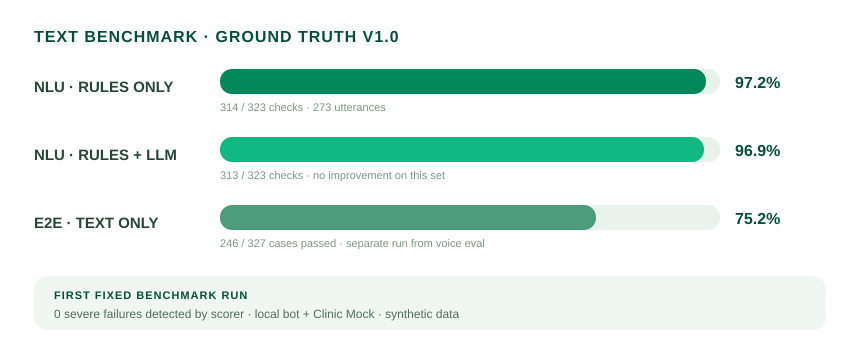
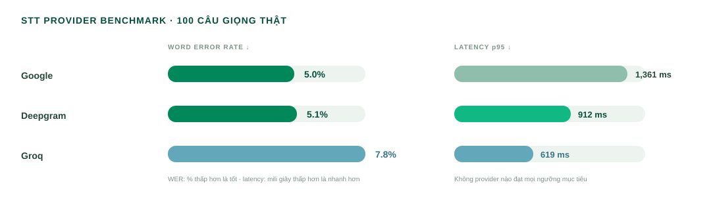
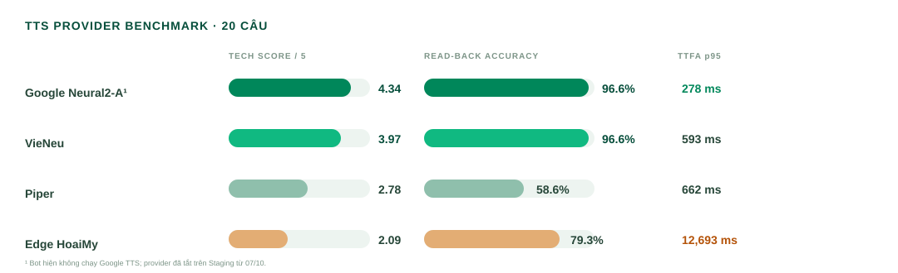

Một lõi hội thoại
HTTP, trình duyệt và điện thoại cùng đi qua process_turn.
3 KÊNH · 7 KỊCH BẢN
Báo cáo kỹ thuật về kiến trúc, an toàn và kết quả đánh giá callbot tiếng Việt cho phòng khám.
HTTP, trình duyệt và điện thoại cùng đi qua process_turn.
AI diễn giải lời nói; FSM và safety guard kiểm soát mọi thay đổi lịch.
Ngân sách theo lượt, fallback theo thành phần, chuyển nhân viên khi cần.
Xử lý intent khác nếu phù hợp; nếu cần dữ liệu bệnh nhân hoặc hỗ trợ, chuyển nhân viên.
SAFE HANDOFF / ENDRead-back lịch → Clinic API confirm
CONFIRMEDXác nhận lần hai → Clinic API cancel
CANCELLEDTra slot → chọn & xác nhận → API reschedule
RESCHEDULEDChuyển nhân viên; không tự xử lý lâm sàng
TRANSFERREDGhi trạng thái UNREACHABLE, kết thúc lần gọi và đưa vào hàng đợi gọi ra lại.
Diễn giải câu nói, ý định và dữ liệu cần thiết.
ĐỀ XUẤTKiểm tra trạng thái, xác nhận và điều kiện nghiệp vụ.
XÁC THỰCChỉ nguồn này lưu trạng thái lịch hẹn.
GHI CÓ KIỂM SOÁTKhông xác minh danh tính,
không đọc lịch hẹn.
Chỉ thao tác trên hồ sơ đã được xác minh.
Chỉ đề xuất khung giờ còn trống từ nguồn đặt lịch.
Không đọc thông tin lịch trước khi xác minh danh tính.
Câu hỏi y khoa được chuyển cho nhân viên.
Đọc lại, xác nhận lần hai và ghi nhận lý do hợp lệ.
Họ tên + ngày sinh
Chưa xác minh → không đọc lịchĐọc lịch hiện tại
Chỉ sau khi xác minh thành côngGET /slots
Chỉ slot được trả về trong cuộc gọiNgày · giờ · cơ sở
Đọc đủ thông tin để xác nhậnCaller đồng ý
FSM + safety guard cho phép“Tôi muốn đổi lịch sang chiều thứ tư.”
“Chiều thứ tư còn hai khung giờ. Tôi xin đọc lại…”
Ngắt lời giữa read-back không được tính là đồng ý.
| CHỈ SỐ | 2026-09-30 · TEXT | 2026-10-13 · VOICE |
|---|---|---|
| Thiết kế | 212 test × 3 run Cả 3 run cùng kết quả; 1 skip mỗi run | 212 test × 1 run Giọng đọc sẵn → Soniox STT → HTTP API |
| Pass / fail / skip | 184 / 27 / 1 Trong mỗi run | 182 / 30 / 0 |
| Lỗi nặng SF-01…05 | 2 · SF-05 Lặp lại cả 3 run | 0 ghi nhận |
| Nguồn fail | Text-only Không đo lỗi STT/TTS | 24 bot · 6 STT |
| p50 / p95 mỗi lượt | 10 / 2.703 ms Text turn | 3.092 / 4.014 ms Voice turn, gồm STT qua Soniox |
| Lượt vượt 8 giây | 0 | 0 |
| Độ lặp lại | Ổn định qua 3 run | Chưa đo · 1 run |
| Chi phí được báo cáo | $0,462 · 3 run | ~$0,15 · 1 bộ voice |

Nhận dạng tên và ngày sinh ảnh hưởng trực tiếp đến xác minh; cần tối ưu cả chất lượng lẫn độ trễ.


Giữ chặt an toàn. Thu hẹp độ trễ. Xác nhận trên hệ thống đã triển khai.